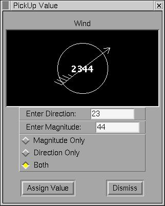

GFESuite Dialogs
User Interface Dialogs describes the various dialogs, including the color table editor, that are used in the GFE.

Main Menu Dialogs
Button Bar Dialogs
Color Table Editor
and
Color Chooser
Spatial Editor Dialogs
Temporal Editor Dialogs
Grid Manager Dialogs
Color Bar Dialogs
Formatter Launcher
Back To TOC